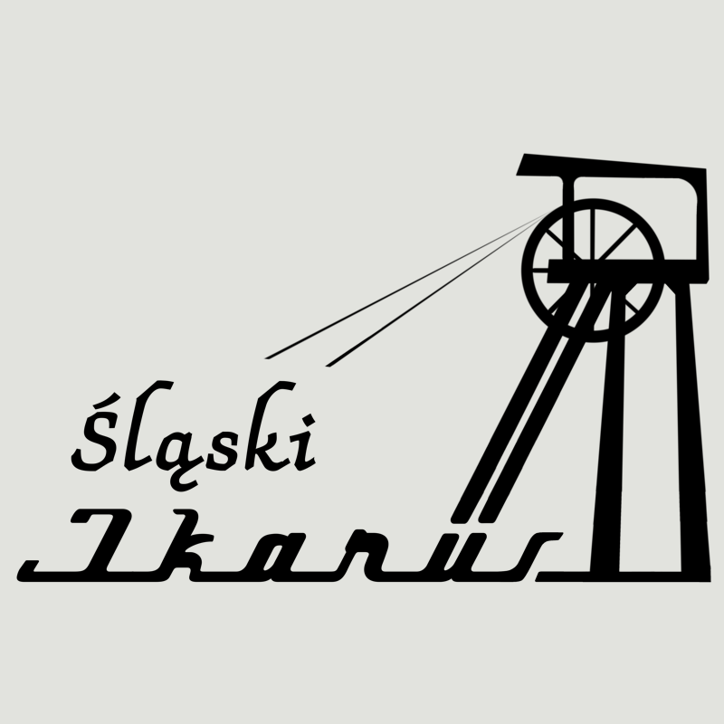

SEPE
An application for tracking working hours, managing leave requests and communicating within a team.
I’m a full-stack developer. I build web applications,
websites and API integrations.
An application for tracking working hours, managing leave requests and communicating within a team.
A ticket booking system for vintage bus trips. Event selection, ticket purchase and QR code validation.
